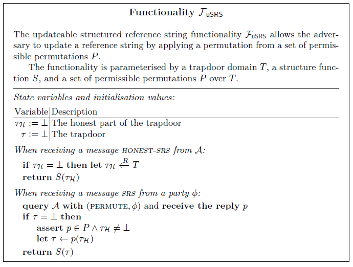
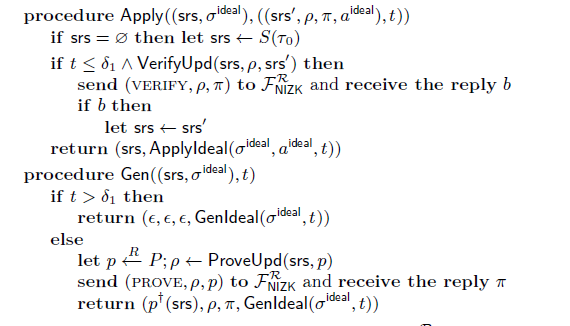

Mining for Privacy:How to Bootstrap a Snarky Blockchain
摘要
非交互零知识证明，更具体说是简洁非交互零知识证明（zk-SNARKs，zero-knowledge Succient No-inactive Arguments of knowledge），已经被证明时区块链和分布式账本领域的瑞士军刀，具有多种在隐私、交互操作、可扩展性方面的应用。许多常用的SNARK系统依赖结构化参考字符串，这个字符串的安全生成被证明是他们致命弱点：如果用于生成字符串的随机性是已知的，则证明系统的健全性可能会被破坏，从而对使用他们的底层区块链系统造成毁灭性后果。在这项工作中，我们首次描述和分析了一种区块链机制，该机制能够产生一个安全的SRS，他的特征是在与区块链协议本身具有可比性的条件下显示安全性的特点。我们的机制利用最近发现的可更新结构化参考字符串来以完全分布式的方式执行安全生成。通过这种方式，SRS源自区块链协议本身的正常执行。不需要额外的安全假设或者链下的计算和\或验证。我们为这个参数的设置提供了具体的指导，允许在合理的时间段内完成安全设置。我们也提供了一个激励方案，当与更新机制配合使用时，可以适当地激励参与者为安全的参考字符串生成做出贡献。
1.介绍
在分布式账本领域，无交互的零知识证明有许多有趣的应用，特别是，他们已经成功被应用到隐私引入这些固有的公共点对点系统中，更值得注意的是，Zerocash证明了他们在创建私有货币方面的用处。除此之外，还有好多建议将相同的技术应用到智能合约以增加隐私性。除了隐私性，其他零知识证明的应用包括区块链的交互操作性和可扩展性
对于这些设计的实际效率，有两件事是最重要的：证明的简洁性，以及验证这些证明的速度。账本的分布式特性要求大量用户存储和验证每一个证明，这使得许多零知识证明系统不适合。
对所谓的zk-SNARKs的研究旨在精确优化这些特征：证明大小通常在千字节以下，验证时间以毫秒为单位。众所周知，无交互零知识证明需要一些共享的随机性或者公共参考字符串。对很多简洁系统，强壮的属性是必须的：不仅是需要一个共享随机值，而且必须遵守一个特定的结构。这样的结构化参考字符串（或者SRS）通常由相关的组元素组成，例如：$g^{x^i}$ 对于$i \in Z_n$ 。
从公共随机数中采样这样一个参考字符串的明显方法揭示了所使用的指数——对这些值的掌握破坏了这个证明系统本身的稳定性。更糟糕的是，这些系统的安全性通常依赖于指数知识的假设，这个假设表明了以这种方式创建相关的组元素需要知道基础指数，因此任何SRS采样器都必须知道这个被使用的指数并且被信任可以消除他们，从而有效的变成一个底层系统的单点故障。虽然安全多方计算能够并且已经被用于减少在设置过程中的这类信任，安全计算参与者的选择和MPC协议生成SRS的验证保留了中心化的元素。在需要SNARKs的去中心化系统的设置中使用MPC仍然有争议。
最近的工作已经发现了具有可更新参考字符串的简洁零知识证明系统。在这些系统中，给定一个参考字符串，有可能产生一个更新参考字符串，因此要知道新字符串的trapdoor，既需要知道旧字符串的trapdoor，也需要知道更新中使用的随机性。推测一个区块链协议可以被用来安全地生成这样一个参考字符串。然而，到目前为止，产生SRS的确切区块链机制以及其可以提供的安全保证的描述仍然难以琢磨。
1.1 我们的贡献
在这项工作中，我们首次描述和分析了一种区块链机制，这种机制能够产生一个安全的SRS（Structured Reference String ？，结构化参考字符串？），其特征是，在类似的条件下区块链协议被证明是安全的。明显不同的是，我们隐式地使用安全擦除，并且仅仅在一个特定初始化期间需要诚实的大多数。SRS源于区块链协议本身的正常运行，不需要额外的安全假设，或者链下的计算和\或验证。
我们主要依赖”Nakamoto-style”的区块链质量属性——分布式账本，其中一个随机过程选择哪个用户可以将块添加到已建立的链上。这样的账本依赖诚实大多数的哈希算力（或者一些其他资源）——并且可以证明链质量属性，这表明任何足够长链片段都会有一些被诚实节点创建的块。
我们在第三章描述的构造中将参考字符串更新集成到生成块过程中，但是由于更新计算是一个计算量很大的操作（尽管，与暴力破解哈希相反，但是有用），我们面临额外的困难。由此产生了两个方面的问题。首先，攻击团伙可以通过在更新中提供少量的熵来走捷径，并且尝试利用这一额外挖矿能力来推翻这个参考字符串，这可能对攻击者来说有很大的好处。其次，即使是非共谋的理性区块创建者，也有可能被激励来使用不良随机性，这可能减少或者消除更新的任何安全好处。我们的工作解决了这两个问题。
在本文的完整版本中，我们通过在通用组合框架中提供分析，正式证明了我们的机制产生了一个安全参考字符串。此外，本文的完整版本通过实验分析演示了如何具体参数化工作证明账本，来保证走捷径的攻击者（而诚实的用户不会走捷径）仍然无法subvert破坏参考字符串。在我们实验章节提供的具体的结果可以用来指导参数的选择，以便在实时区块链系统中运行我们的参考字符串生成机制。
在第四节中，我们更进一步介绍一个激励机制，它能够保证协议中想要最大化利益的理性参与者能够避免低熵攻击。简而言之，激励机制要求最终链中更新贡献者的随机部分会被要求揭示他们的trapdoor，它会被潜在账本规则验证为随机Oracle预言机？输出。只有使用者能够证明他们的更新是随机的，他们才能获得相应的奖励。小心的选择奖励分配能够使我们能够证明，理性的参与者会利用高熵指数，从而为SRS计算做出贡献。
1.2相关工作
除了与引入可更新字符串的工作的明显关系，还有尝试实际回答如何安全地生成参考字符串的问题。这些是在字符串是不可更新的背景下。
值得注意的是，[5]描述了Sprout在加密货币SRS初始化设置中使用的机制（Sprout是Zcash的第一个版本），它使用了多方计算来生成一个参考字符串，其中包含对初始参与群体的信任根。由于MPC协议的性能限制，尽管只需要但参与者的诚实度，但参与者的集合相对小。
对于Zcash的Sapling版本，当他们的参考字符串被替代的时候（由于零知识语句的升级，并且使用了证明系统），它使用了一个不同的方法。他们在[6]中描述的第二SRS生成机制，使用了一个多阶段轮询机制来为Groth's zk-SNARK生成参考字符串。他们利用一个随机信标beacon来保证结果的均匀分布，并且使用一个协调器来执行确定性辅助计算。
在无交互零知识证明的设计方面也做了大量工作，这种零知识证明不需要参考文献中的结构，如DARK[8],STARKs[1],Bulletproffs[7]。虽然这些提出了一个很有前途的可替代方案，充分利用参考字符串的可更新性有可能在没有额外安全假设的情况下获得更好的效率，并且可能在实例化通用结构（如基于多项式承诺的Halo Infinite）时发挥作用。
2 可更新的结构化参考字符串
虽然可更新的结构化参考字符串（updateable structured reference strings，uSRSs）在我们构建的工作[26,3.2节]中建模，但我们在通用可组合型（UC）设置中对他的安全性进行建模[10]。在此，一个uSRS是一个带有潜在trapdoor $\tau$ 的参考字符串，它具有一个结构函数$S$ 。$S(\tau)$ 是这个参考字符串本身，但是$\tau$ 并不会透露给攻击者，在本文的完整版本中[22,附录A]，我们证明了Sonic[26]（正像在2.2节说的，对提取进行了少量修改）满足我们在本节要求的所有属性。我们的主要证明是与Sonic协议无关，并且适用于满足本节其余部分列出的属性的任何可更新的参考字符串方案。
2.1 标准需求
uSRS方案S由一个trapdoor域T，一个初始trapdoor $\tau_0$ ，T上允许置换的集合P（即域和余域为T的双射函数）和域T上的结构函数S组成。我们要求P包括恒等函数id，并在函数组合下封闭：$\forall p_1,p_2 \in P : p_1 * P_2 \in P$ 。一个有效的置换$\dagger $ 提升应该存在，这样对于任何置换$p \in P$ 和 $\tau \in T$ ，$p^{\dagger}(S(\tau)) = S(p(\tau))$ 。最后，必须存在用于创建并验证更新证明的算法$\rho \gets ProveUpd(S(\tau),p)$ 和算法 $b \gets VerifyUpd(S(\tau),\rho ,S(p(\tau)))$ 。这些更新证明的格式没有指定，然而必须满足一下约束条件：
- 正确性，应用一个诚实生成的更新证明会验证：$\forall p \in P ,\tau \in T : VerifyUpd(S(\tau),ProveUpd(S(\tau),p),S(p(\tau)))$
- 结构保护，应用任何有效的更新等价于在trapdoor $\forall p,\tau,srs’:VerifyUpd(S(\tau),\rho,srs’) \Rightarrow \exists p \in P: srs’ = S(p(\tau))$ 应用一些排列。
- 更新一致性。应用一个随机排序就等价于选择一个新的随机trapdoor：设D是T上的均匀分布，对于所有的$\tau \in T$ ，使得$D_\tau$ 是多重集${p(\tau) | p \in P}$ 上的均匀分布，然后$\forall \tau \in T : D = D_\tau$
我们定义了一个相应的UC函数FuSRS，它提供了一个参考字符串$S(p(\tau_\mathscr{H}))$ ，这个参考字符串能被攻击者通过排列$p\in P$ 影响，仅给定$S(\tau_\mathscr{H})$ 作为输入，用户随机采样$\tau\mathscr{H} \in T$ .

我们相信这个功能是独立的，它没有明确地与我们的实现联系在一起。值得注意的是，当while我们使用分布式账本作为广播通道的弱形式，但可以考虑其他通道，而无需修改此功能。然而，正如前面所说，这个功能并没有规定任何特定的用法，我们推测，当使用适当的结构函数和排列集参数化时，它可以安全地实例化可更新的基于SRS的SNARKs，如Sonic[26],Marlin[11], 或者Plonk[13],由于UC设置，这将需要额外的提升来实现UC知识提取，如[24].
2.2 模拟要求
除了正确性、结构保持和更新一致性的基本属性外，任何希望通过更新帮助实现$F_{uSRS}$ 的模拟器都需要两个额外的属性：
- 更新证明模拟。从模拟器知道trapdoor的初始SRS $S(\tau)$ ，它可以生成一个任何（正确结构的）SRS有效更新。形式上：$\exists S_\rho \forall \tau_1,\tau_2 \in T: VerifyUpd(S(\tau_1),S_\rho(\tau_1,S(\tau_2)),S(\tau_2))$ 其中$S_\rho$时一个PPT算法。
- permutation extraction，排列提取？。模拟器必须能够提取任何有效对抗性更新证明背后的排列p
实现排列提取最自然的方法时使用白盒提取器，因为更新本身通常依赖于某种形式的知识假设，如指数知识，然而，白盒提取器不能用在UC证明中，相反，我们假设更新证明通过一个低等级的NIZK（Non-interactive zero-knowledge，非交互零知识证明）被证明是与特定的trapdoor相对应。更重要的是，这种低等级的NIZK，仅仅依赖于常见的随机字符串或者一个随机oracle，而不需要结构化的参考字符串。幸运的是，它不像本文完整版本[22,第四节]演示的那样，受到严格的效率要求。
具体来说，我们假设基本更新证明是NIZK关系R中的一个语句，其中见证人是对应排列p的一个编码。我们要求每个更新证明有且仅有一个相应的排列，正式地表示为要求R是一个双射，这导致了对ProveUpd和VerifyUpd的直接修改。即使在UC环境下也允许提取底层排列：ProveUpd还创建了一个NIZK证明$\pi of(\rho,p) $,并且返回$(\rho,\pi)$ ，而VerifyUpd只有这个新嵌入的NIZK证明也验证时才返回true。
如有R的定义，添加此NIZK可以简单保留所有安全属性，包括正确性：
我们在[22,附录A]中表明，可以有效地构建Sonic[26]的情况所需的关系，并将如何在不依赖于进一步的NIZK的情况下实现提取的问题留给未来的工作。
3 根据链质量属性构建uSRS
本节展示了如何通过要求块创建者在初始化期间对不断发展的uSRS执行更新来使用分布式账本安全地初始化uSRS，在等待最终uSRS达成一致后，它可以被安全地使用。为了对这种方法正式建模，我们讨论了在模拟证明中使用的理想情况和现实情况。两种情况都可以访问账本，但是理想条件下账本和参考字符串（由独立的$\mathcal{F}_{uSRS}$ 功能提供）是独立的，然而现实情况是账本通过编程使用更新来生成
3.1 高度概括
本文的这个基本前提依赖于Nakamoto-style 账本的基本操作方式：不同的用户如果满足一些条件可以扩展区块链，这个条件由一种难度有关，这个难度值可以保证攻击者能够执行的扩展数量有限。给定这样一个结构，我们将uSRS更新与时间$\delta_1$ 之前的每个区块关联起来。这个时间的选择保证账本的安全属性确保此时每个竞争链中至少一个区块是诚实的。
在我们的建模中，我们通过一个额外的领导状态的账本功能来构建他，这个领导状态源自嵌在区块中的信息挖掘者。特别对于我们的情况，这些编码的uSRS更新。我们保留足够的通用性来允许其他用途。它的基本思想是要表明，一个在领导状态执行uSRS更新的账本等同于不执行更新，但伴随有$\mathcal{F}_{uSRS}$ 功能。他们分别构成了我们理想情况和真实情况。在$\delta_1$ 之后，用户再等待一段时间$\delta_2$ 直到公共前缀保证所有各方对参考字符串达成一致。
尽管账本功能常常被视作是全局的，但我们的方法有效地从另一个账本构建了一个账本——账本不是我们协议的一个依赖项，但是是一个组成部分。再这种情况下，全局是无关紧要的，因为环境已经可以直接访问功能，但是我们仍期待构建在账本上的协议能够在全局范围内使用它。对于uSRS来说，情况并非如此，大多数使用可能依赖于模拟器能够提取它的trapdoor。
3.2 我们的账本摘要
我们对这些可更新结构化参考字符串功能的构造很大程度上依赖于公共前缀,链质量，链增长的属性，这些属性是Garay等人在”Bitcoin backbone”分析中定义[14]，用于Nakamoto-style 共识算法。尽管我们在标题中仅使用了链质量属性，但我们充分利用了这三个属性，而不仅仅是链质量属性。我们强调链质量，因为他是确保一个诚实更新发生的核心属性。我们简单而非正式地重申这三个属性：
- 公共前缀。给定当前两方的链$\varPi_1$ 和$\varPi_2$ ，并从第一个开始移除k个块，它是第二个链的前缀：$\varPi_1^{\varGamma k} \prec \varPi_2$
- 链质量.对于任何一方的当前链$\varPi$ ，该链中任意连续$l$个区块将包含诚实方创建的$\mu$ 个块。
- 链增长。如果一方链长度为c，那么在s个时间段之后，链长度至少为$c+\gamma$ 。
这些参数决定了我们协议的两个阶段的长度，在第一个阶段，我们从liveness parameter（假设$\mu \ge 1$ ）构建了参考字符串本身，在第二阶段，我们等待这个参考字符串传播到所有用户，第一个阶段的长度至少为$\delta_1 \ge \lceil l\gamma^{-1} \rceil s$ ，第二个阶段长度至少为$\delta_2 \ge \lceil k\gamma^{-1}\rceil s$ ，他们合起来构成了uSRS的总生成延迟$\delta \ge (\lceil l\gamma^{-1} \rceil + \lceil k\gamma^{-1} \rceil)s$
我们假设一个保证主干属性的账本。虽然我们没有证明任何具体的现有工作量证明账本（或者基于不同领导选择机制的账本）正式地UC-realise这种特定的形式，我们认为Nakamoto-style共识的所有账本都是这样。账本和论证都在本文的完整版本[22,附录B]呈现，我们的功能进一步依赖一个global clock $\cal{G}_{clock}$ ，在[22，附录E.1]中定义。本文的目的，这是一个信标，他向请求他们的任何一方提供代表当前时间的单递增值，这就足够了。
除此之外，我们假设每个块都能包含额外的信息，由他的创建者（矿工）提供，这些信息可以被聚合来创建一个”领导者状态“。每一个创建的块与一个更新a相关联，账本由两个过程Gen , Apply 参数化，这两个过程分别描述了更新的诚实选择，和更新的语义。展望未来，他们在内部使用ProveUpd和VerifyUpd，尽管其形式足够普通允许将leader state用于其他并行目的。这个具体的参数在理想情况和现实情况不同，在理想情况”隐藏“uSRS更新，除此之外，现实情况增加了时间敏感性：在设置期后它对SRS没有任何作用。Gen是随机的以leader状态$\sigma$ 和当前时间t作为输入，生成一个更新a,Apply 以leader state $\sigma$ 、更新a、和更新时间t为输入，返回继承状态$\sigma’:\sigma’ = Apply(\sigma,(a,t))$ ，对一个链来说，leader state或许由从初始化状态$\varnothing$ 开始顺序应用链中所有更新计算得来。
攻击者控制着什么时候、哪一方创建一个新块，同样还有每个新块中包含的交易（只要不违反主干属性）。对于由被破坏的一方创建的交易，攻击者可以更进一步控制块的时间戳（在不存在于未来的合理范围内，并在前一个块之后），以及所需的更新a本身。对于诚实方更新，则使用Gen。
我们的账本提供的接口如下：
- SUBMIT，提交一个新的交易
- READ，读取确定的交易序列
- PROJECTION，读取当前链的交易序列（可能是未确认的）
- LEADER-STATE，读取确定的leader state
- ADVANCE，攻击者将一方切换到更长链
- EXTEND，攻击者指示一方创建区块
虽然这个账本抽象不是本文的重点，但是我们相信，在需要对矿商的行为进行更精细的控制或者更好地访问竞争链的情况下，它具有独特的便利
3.3 理想情况
我们的理想环境下由两个并行组合的功能组成（我们的意思是：环境可以解决任何一个问题，而且他们不相互作用）第一个是$\cal{F}_{uSRS}$ 的变体，经过修改后，在$\delta$ 时间过去之前，诚实的各方不能进行处理。在形式上，这种改变是使用包装函数$\cal{W}_{delay}(\cal{F},\delta)$ 完成的，如[22,附录E，4]所述。
第二个是Nakamoto-style账本功能，通过任意leader-state生成和应用程序进行参数化，这些函数也在混合环境下部分使用：$Gen = Genldeal$ 和 $Apply = ApplyIdeal$ 以及以下账本参数：
- 一个公共前缀参数k
- 链质量参数$\mu$ 和 $l$
- 链增长参数$\gamma$ 和 $s$
在形式上，我们理想环境下由这对$(\cal{W}_{delay}(\delta,\cal{F}_{uSRS}),\cal{F}^{ideal}_{nakLedger})$ ，以及全局功能$\cal{G}_{clock}$ 组成。
3.4 现实与理想的混合情况
在我们的混合情况中，我们使用uSRS方案$\cal{S}$ ，算法ProveUpd和VerifyUpd，结构函数S，允许排列P，排序提升＋，初始trapdoor $\tau_0$ 混合情况由单独的Nakamoto-style 账本 $\cal{F}^{real}_{nakLedger}$ ，一个NIZK功能$\cal{F}^R_{NIZK}$ ，和一个全局时钟$\cal{G}_{clock}$ 组成，这个账本由与理想情况下同样的链参数和以下leader-state程序进行参数化：

请注意，这些参数化算法使用$\cal{F}^R_{NIZK}$ ，因此账本依赖于此混合功能。
问题的关键是一旦在初始化块质量期间之后一个块通过共识上链，他可能声明的任何参考字符串更新都不再执行。此时，因为链仍可能被重新组织，uSRS不一定稳定，但是对于特定链来说不应该改变。更进一步，这些程序总是模仿理想情况，扩展他（是指？）而不是取代他。这证明了允许块leader产生更新的可组合性，：一个用于安全更新的系统不会影响leadership state的其他并行使用。
除了保证查询被适当的路由，Uc模拟理想情况的行为几乎不需要做其他工作，特别时如何在混合情况下查询参考字符串。我们在本文的完整版本[22，附录C]中使用一个小”适配器”协议来描述这个，LEDGER-ADAPTOR 。这将转发大多数查询，并且将uSTS查询看作是$\delta$时间后查询leader state的适当部分，在这个时间之前则忽略他们。正式地，我们现实情况是由全局时钟$\cal{G}_{clock}$ 和系统LEDGER-ADAPTOR $(\delta,\cal{F}^{real}_{nakLedger}(\cal{F}^R_{NIZK}))$ 。
3.5 $\mathcal{G}_{clock}$ 的替代用法
在这两个条件下，$\cal{G}_{clock}$ 被用作确定截断点，在此点之后参考字符串被视作安全的。这个Clock的简单的替代方案是，为此目的而依赖于链的长度。我们没有做出这样的选择，因为它使理想情况变得复杂：延迟包装器必须与理想情况下的账本通信，并且查询各方链的长度。我们不认为时钟是一个重要的额外假设，然而，如果使用链长度代替，本文的剩余部分几乎没有什么不同。即使在这种情况下，时钟的出现也是为了保证火星，尽管它只用于约束攻击者。
3.6 UC仿真
我们的安全性是通过UC仿真得到的，在以下定理中说明：
定理1.对于任意可更新参考字符串模式S，满足正确性，结构保持和更新一致性以及使用$S_p$ 进行更新模拟和排列提取，LEDGER-ADAPTOR （在$(\cal{F}^{real}_{nakLedger},\cal{F}^R_{NIZK})$ 混合情况下，参数化如3.4节）在存在全局时钟功能$\cal{G}_{clock}$ 的情况下，使用模拟器$S_{LEDGER-ADAPTOR}$ .UC仿真这对功能$(\cal{F}^{ideal}_{nakLedger},\cal{W}_{delay}(\delta,\cal{F}_{uSRS}))$ ，参数化如3.3节，
完整的安全证明和仿真可以在本文的完整版本中找到[22，附录 F&D]
4 低熵攻击更新缓解
虽然我们的分析表明，在Byzantine拜占庭，诚实大多数情况下，我们协议生成一个值得信任的参考字符串，他也要求参与者将计算资源用于更新。在合理的情况下，玩家需要合理激励来遵守协议。我们强调理想条件并不是本文的重点，乐观地说，在一个大多数矿工都是理性只有一小部分诚实的环境中，少数诚实的区块足以消除本节中描述的问题。
对于Sonic ，一个协议偏差的存在破坏了参考字符串的安全性：通过以特定的低熵方式选择指数（例如$y=2^l$ ）。主要依赖于重复平方的更新计算可以明显加快。一般来说，P中的一些随机排列可能更有效地计算。更详细地说，与其使用一个随机排列p， 不如做出一个特定的选择来简化srs’的计算，——在最极端的情况下，对于任何uSRS方案，p=id的更新是微不足道的。
4.1 proposed construction
为了缓解这类攻击，我们将需要假设底层账本的一个额外的属性，特别是他必须提供一个可重置的随机信标：对于每一个ADVANCE操作（攻击者必须限制它执行这个操作的频率），一个随机信标值在变量bcn中采样并且和对应的块相关联。这类信标通常很容易获得，例如通过工作量证明机制[4]的哈希算法，并且很多内置在权益证明机制的设计中。之前的工作[12]证明了这种信标值允许攻击者在信标值还没有进入到账本确定状态确定前，只通过重置它最多一定次数（如t次）来使他们发生偏差。t的确切取值取决于链参数。
我们可以 通过向$\cal{F}_{RO}$发送一个查询（bcn,nonce） 来修正Gen以从随机oracle中获得随机值，其中nonce是一个随机选择的随机值，bcn 是前一个块的信标值。响应用于索引trapdoor排列集合P，选择结果p，nonce由矿工存储在本地，并保持私有。我们调整第一阶段的第一期，以便至少产生$l’ := l(1-\theta)^{-1}+c$ 个区块，其中$\theta$和$c$ 是新的安全参数（下面会讨论）。接下来，第二阶段结束后，我们可以确定与第一阶段结束相关联的信标值最多被重置了t次。
我们从bcn中提取 l' 个有偏差虚拟币中，每个都有概率$\theta$。对于每个区块，如果对应的币为1.则需要在至少与活性参数一样长的一段时间内揭示其随机性。具体来说，上链区块所对应的矿工可以显示其nonce，相应地，这个矿工会获得标准区块奖励的R倍额外奖励。
然而这需要更严格的链质量属性，而账本功能却强制l中一个未打开的更新是诚实的，我们在下一节中概述为什么这个属性仍然保持。
4.2 安全直觉
现在考虑一个具有哈希能力$\alpha$ 的理性矿工。我们知道，在最好情况下，使用像比特币这样的基础区块链，这样一个矿工期待的相对的回报最多是$\alpha/(1-\alpha)$ ，这架设了一个自私的挖掘策略，在所有的网络竞赛中战胜了其他理性参与者。现在考虑一个矿工，它使用低熵指数来节省创建区块的算力，从而增加他们的哈希能力$\alpha$ 到一个相对哈希能力 $\alpha’ > \alpha$ 。这种攻击可以进一步通过分叉和有选择的公开那些有能力将bcn值重置到一为首选值的区块来影响区块链。为了证明这个影响是最小的，我们证明了下面的引理。
引理1.考虑一个映射 $\rho \mapsto \{0,1\}^{l’}$ ，当$\rho $均匀选择时，产生$l’$ 个独立的偏差代币，每一个的概率为$\theta$ 。考虑任意 $n \le l’$ 的固定位置，假设攻击者从映射的随即输入的$t$ 个独立抽取中选择任意一个，目的是增加n个位置的成功次数。获得超过$n(1+\epsilon)\theta$ 成功的概率是$exp(-\varOmega(\epsilon^2\theta n)+lnt)$
证明。在$t = 1$的情况下，结果来自定义为获得大于$n(1+\epsilon)\theta$次充公的事件E的切尔诺夫界，并且具有概率$exp(-\varOmega(\epsilon^2\theta n))$ 。鉴于每次重置都是同一实验的独立实验，通过应用并集边界，我们得到引理的论述。
利用低熵攻击的矿工的最优策略是最小化其他矿工被选择的区块数量，来增加相对回报。引理1证明了以这种方式最多可以造成$(1+\epsilon)^{-1}$ 的一个因子的伤害，无论矿工是否利用低熵攻击，他们的最优策略是自私挖掘，在低熵攻击挖掘中，期望$l’\alpha’/(1-\alpha’)$ 块[14]。一个利用低熵攻击的理性矿工不会获得任何额外的奖励，然而另一个不这么做的矿工，根绝引理1，通过揭露他们的随机性会获得至少$l’\alpha/(1-\alpha)(1+\epsilon)^{-1}\theta R$ 个奖励。这证明了对一个理性的矿工，只有在以下情况下，该策略才有利于纯粹的自私挖掘：
如果我们假设一个矿工可以通过使用低熵攻击指数来将他们有效哈希率提高c倍，那么在低熵情况下，他们的优势是$\alpha’ = \alpha c/(\alpha c+\beta)$ ,其中$\beta = 1-\alpha$ 是所有其他矿工的相对挖掘能力。如果上式满足，那么当且仅当下式成立，矿工才会获益：
如果我们在各块之前采用一个足够大的预期时间间隔，就有可能使用低熵指数来约束矿工的相对节省
根据完整版本模拟的参数化[22,4.2节]，如果一个使用这样指数的自私矿工可以提高他们的哈希能力最多一个乘法因子c，那么我们可以通过设置R为$(c-1)/(\theta(1+\epsilon)^{-1})$ 来缓解这样的攻击。
5 讨论
尽管我们从一个账本协议简洁生成一个参考字符串本身是有用的，但实际情况可能更加复杂，在本节，我们将讨论可能进行的实际调整。
5.1 更新参考字符串
因为分布式账本通常寿命很长，很可能比任何在其中使用的参考字符串都要长，或者在需要参考字符串之前已经在运行了。实际上，Zcahs协议的参考字符串已经升级。没有上下文的情况下，一个参考字符串被新的取代是无害的，然而重要的是考虑他们在零知识证明方面通常是怎么使用的。如果使用他们的证明是无状态的，那么从一个不安全的参考字符串升级到一个安全字符串的行为可能会像人们天真期望的那样：它确保升级之后安全属性不变。
在Zcash的例子中，它运行的是Zerocash协议的一个变体，他的情况更加复杂。Zerocash 提供有状态的零知识证明，假设一个用户对初始设置的安全性持怀疑态度—并且有充分的里由—但是确信第二个参考字符串是安全的。这样的用户是否能够对Zcash 的安全性充满信心？
如果Zcash没有合适的保障措施，答案将是否定的。虽然协议可以按照预期执行，并且用户可以确信这一点，由于证明的有状态性，用户不能确信这个状态的正确性。Zcash加密货币确实采用了与我们下面概述的类似的保卫措施。我们在此强调这一点的重要性，因为并不是所有项目都会有这样的远见。
具体来说，对于基于Zerocash的系统，一个初始参考字符串的后门可能已经被用来创建不匹配的交易，并且有效地非法铸造大量货币。这一过程在当时是无法检测的，并且非法铸造的货币将在参考字符串升级过程中持续存在，。因此我们的虚拟用户可能会对合理怀疑他买到的任何货币的价值，他们可能是一个几乎无限货币池的一部分。
这样的攻击一旦发生（尤其是针对货币）是很难恢复的。因为无法证实货币的合法物主，即使私有交易历史被匿名，罪魁祸首也被确认。罪犯可能已经将他创造的任何东西交易出去。因此，简单地宣布交易无效会伤害那些与罪犯交易的用户，而不是罪犯自己。在一个极端情况下，如果他与合法货币持有者进行一对一交易，他将成功地窃取诚实用户的资产，而如果这样的攻击发生，社区用户有两个不行的选择：取消潜在合法用户的资金，或者接受潜在的大量通货膨胀。
然而我们可以假设一个没有那么糟糕的情况：假设我们合理地相信旧参考字符串的安全性，但我们更相信新的参考字符串。有无可能使用户相信我们真的升级了安全性？我们建议使用一种防火墙属性，这种属性在（cross-chain transfers）跨链传输领域中是很常见的[17]。并且被设计来防止一条链上的灾难性故障损坏另一条链。
对于货币转账，防火墙可以保证不超过资金上限，如果可以接受一个小的隐私损失，那么证明防火墙属性是容易的——每一个私有货币都要在升级后使用之前进行重铸，重铸期间必须声明他的价值。假设所有操作正常执行，并且没有违反防火墙属性，与后防火墙状态交易的用户可以确信可用资金的上限，此外，系统上的攻击亦可以识别：如果一个攻击铸造了太多货币，最终会违反防火墙属性，这表明有太多货币在流通——这就带来了如何处理这种情况的问题。我们相信，防火墙属性确实可以让系统用户安心，并且是一种实用的方法，可以缓解对曾经有问题参考字符串的系统安全性的担忧。
在Zcash中，这种防火墙的一种软形式是可用的，因为资产被分成几个池pools，每一个池实用不同的证明机制。每个池的总价值是可以管吃的，低于0的值会被视为报警原因，并拒绝。Zcash使用术语"turnstiles" 旋转门？，并且没有观察到通过他们的攻击。
正如完整版本的模拟[22,4.2节]，对于实时系统，需要进一步考虑的点是，所需时间很大程度上依赖于块之间的频率。这可能与选择块时间的其他考虑冲突——这个问题的一个潜在解决方案是只在"superblocks" 上执行更新：满足比通常更高的工作量证明（或其他选择机制）标准的块。
5.2 信任的根源 The Root of Trust
对于分布式账本设置中的所有协议来说，一个更重要的问题是，是否一个在运行时某个点进入系统的用户可以相信其安全性。早期的权益证明协议，如[23]，在这一方面做的很差，例如很容易受到"stake-bleeding"攻击[16]，实际上意味着新用户不能安全地加入到网络中。
对于参考字符串，如果一个新用户准备接受诚实大多数假设成立，他们？可能相信参考字符串的安全，正如前述定理1。然而， 共识协议的安全性有一个奇怪的不同：至少对基于工作量证明的协议来说，要相信共识，最重要的是相信当前诚实大多数，因为这些协议被认为能够在过去某个时候从不诚实大多数中恢复过来。另一方面，参考字符串的安全性只依赖于在初始$\delta$ 时间单位内假设诚实大多数。如果一大段时间过去，这可能会成为一个问题——为什么要相信不同时间段的用户的意图？
事实上，定期刷新参考字符串来更新对他的信任可能是有意义的。持续执行更新是诱人的，然而，正如5.1节所述，这并不一定会增加对有状态系统的信任，尽管当使用无状态证明时，它可以从诚实大多数需求中删除”历史“部分。
大多数颠覆攻击时可以检测的——他们需要很长的分叉，这在合法执行的过程中不太可能发生。在没有攻击企图的乐观情况下，这可能提供了额外的确认级别：如果在初始设计期间没有广泛传播的大分叉声称，那么参考字符串可能是安全的（除非出现大规模out-of-band审查）。另一方面，这可能更容易引起怀疑，然而，因为没有办法证明这一点：恶意行为者可能会在初始化设置很长时间之后创建一个分叉，并声称这是破坏系统可信度攻击的证据。
5.3 不可更新SNARKs的应用
可更新SNARK模式有两个明显的优势，我们的协议利用了这两个优势：首先，他们有一个显式的更新过程，这个过程允许一方 $\phi$ 使用安全性依赖于$A\vee (\phi 是诚实的)$ 的参考字符串替代一个安全性依赖于一些假设A的参考字符串。第二，他们可以在部分偏差的参考字符串上生存，这是我们在本文没有直接使用的一个事实，但是我们提供的$\cal{F}_{uSRS}$ 功能允许拒绝采样，将其编码到理想情况中。
对于某些zk-SNARKs（如[18])，可以通过存在一个较弱的属性来解决更新算法的缺乏问题。：在第二阶段中，参考字符串可以由（可能不同的）各方在每个阶段执行round-robin更新（也可以分组求幂）来构造，在[6]中也详细介绍了这种方法，他意味着对我们协议自然转换，其中第一阶段被长度相同的两个阶段替代，分别执行第一阶段和第二阶段更新。
对不可更新SNARKs，部分偏差字符串的安全性还没有充分分析，然而这一弱点可以得到缓解。根据[6]，可以使用一个纯随机信标（与第4节中使用的可重置信标相反）从目前不纯参考字符串创建一个纯参考字符串。设计方案如：在时间$\delta$ 后将查询随机信标，并使用这种随机性来选择在参考字符串上的trapdoor排列。这将被每一方独立应用，得到相同的随机分布的参考字符串。
由于可更新SRS不需要这么做，所以我们没有进行深度分析，然而这个模拟方法是相同地执行SRS生成，然后编程随机信标来反转所有应用于诚实参考字符串的排列。由于这包括应用在每个诚实更新上的诚实排列，所以这对攻击者来说与随机值没有什么区别。值得注意的是，随机信标的需求是需求中较强的一方，特别是由于它本身不应该允许对抗性影响来提供所需优势。为随机性而使用的块哈希方法引入了我们正试图消除的有限影响。
6 致谢Acknowledgements
Bibliography
无论多复杂的验证问题都可以最终简化为一个多项式验证问题！
零知识证明：
- 两方：prover，verifier （已知）
- 证明算法：Setup （已知）
- 同态隐藏：1.一个x对应一个y，2.但是y不能反推出x，3.由F(a) F(b) 可知 F(a+b)
- 公共参考字符串 CRS （已知）
- 证明问题： 取决于双方
verifier 要向prover发送一段信息，要求prove证明这部分信息满足一定要求，这部分信息不随验证内容改变，可以事先在区块链中一次性设置好，之后的验证过程可以复用，这个事先设置好的信息成为公共参考字符串（CRS），这个字符串由随机点s，和随即系数k经处理得到，这个字符串需要保密，因此sk需要保密，CRS泄露后会有伪造证明通过，在Zcash的系统里，CRS中存放的实际上只是随机点s和随机系数k的一系列加密值，而s和k的明文则由6个“被充分信任的人”私下保存，这6个人处在地球上6个不同的位置，这些机密的随机数被拆开保存在这6个人手上，只要不是这6个人都变成“坏人”，这些随机数信息就不会被完整恢复。 不同prover和verifier双方验证问题的不同决定多项式的不同，即同样的参考字符串在不同的多项式中不同的性质。